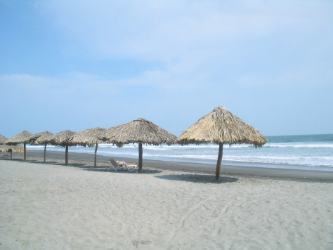
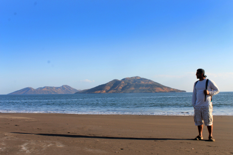
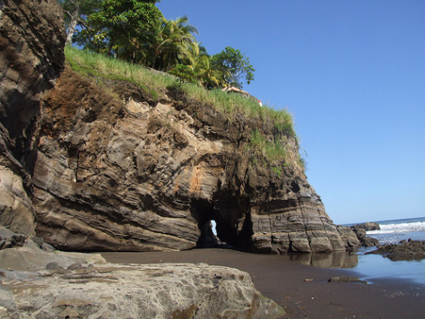
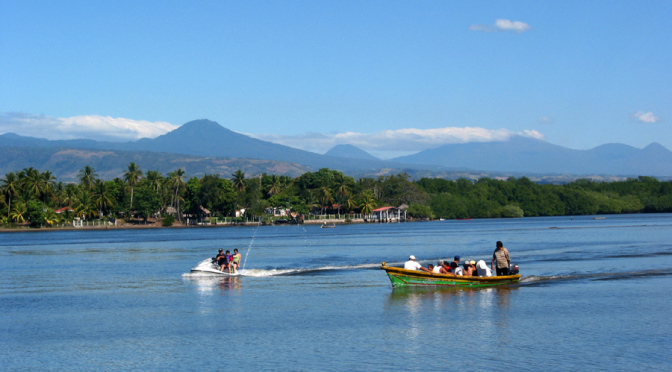

Turismo en El Salvador
El turismo constituye uno de los mayores recursos para el desarrollo económico de El Salvador. A los excelentes atractivos naturales que posee el país, con playas paradisíacas, un clima tropical benigno y paisajes exuberantes, se une un importante patrimonio arqueológico y ecológico, con vestigios coloniales y precolombinos, además de reservas nacionales. Sin embargo, en las últimas décadas, la diversidad y el equilibrio ecológico del país han sufrido el duro impacto del urbanismo, la contaminación y la solución; la creciente concentración de la población en las áreas urbanas ha llevado a un mayor aglutinamiento de la población en las regiones Sur y Occidental del país (especialmente en el Área Metropolitana de San Salvador). Estas zonas constituyen un ecosistema frágil, ya que en ellas se canalizan y se alimentan los acuíferos del corredor sur del país, limitando la capacidad de abastecimiento de agua a partir de las fuentes subterráneas. Las causas principales de la contaminación y solución ambiental en El Salvador son fundamentalmente el transporte, la industria, la quema de campos y la incineración de residuos sólidos (aproximadamente la mitad de la basura generada en el Área Metropolitana de San Salvador no se recicla). A esto hay que añadir que una gran mayoría de los hogares utiliza leña para cocinar.
Galeria
- 
- 
- 

- 
Comidas Tipícas de El Salvador
La gastronomía de El Salvador se basa en productos como el arroz, frijoles, maíz, carnes, ricas frutas y verduras, productos lacteos, además de pescados y mariscos. Entre sus platos típicos hay que destacar la pupusa, que es una tortilla de maíz rellena de queso, frijoles o chicharrones, etre otros ingredientes. Frijoles con arroz, sopa de frijoles, tamales de queso, pollo o gallina, . La cocina tradicional salvadoreña refleja las costumbres de los antiguos pueblos, conservándose siempre como elemento principal el maíz.
Hoteles
Estos hoteles de lujo se caracterizan por ofrecerte la mejor atención y la más amplia gama de servicios, que van desde espacio para piscinas, salones de gimnasia con profesores y animadores infantiles incluidos, hasta un servicio de guardería para niños, shows y eventos casi todas las noches. Tienen un espacio para las comidas y veladas con música en vivo, además de una carta desarrollada por varios cheffs especializados en la gastronomía de la región.
Playa Costa del sol
La Costa del Sol es uno de los lugares de mayor atracción turística de El Salvador, con muchos hoteles y clubes de playa. La playa es visitada por una gran cantidad de turistas por sus bellas playas, sus atardeceres, la gastronomía con mariscos frescos y los deportes acuáticos. La Costa del Sol es una playa para todo tipo de turistas y con sus 15 km la más extensa de El Salvador, es ideal para la práctica del jogging, practicar futbol y voleibol de playa
Tradición y cultura en El Salvador
Una de las mejores riquezas de El Salvador es su gente. El encanto de sus habitantes le ha valido el nombre de "el país de la sonrisa". Más de seis millones de habitantes, un 90% de mestizos, un 5% de indígenas y el otro 5% de descendientes europeos pueblan el país. El Salvador guarda un rico pasado de culturas indígenas que se manifiestan en las danzas, las narraciones y las costumbres producto de la mezcla entre lo indígena y lo español. Las festividades populares van siempre acompañadas de las danzas folclóricas con trajes y máscaras de gran colorido.